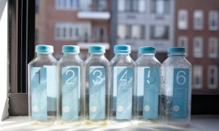

|
|
Recent Posts / 최근 글
스윙일기
여기저기 써놓았던 스윙일기를 찾았다. 1.지난 수업 린디합 수업에서 종종 팔에 텐션이 약해 리드하기가 힘들다는 지적을 받았다. 그리고 텐션이 좋더라도 내가 리더를 따르지 않고 먼저 움직이는 몹쓸 습관을 지니고 있었다는 것을 알았다. 난 이게 왜 이렇게 힘들지?눈을 감고 리더에게 몸을 완전히 맡기고 춤을 추면 고쳐진다는 선생님의 조언이 있었다. 아 팔로워의 비애… 2.솔로 [...]April 19, 2014 /

바둑과 스윙
어렸을 때 저녁이 되면 종종 아빠를 찾으러 기원에 가야 했다. 거의 한량처럼 사셨던 아빠는 저녁때만 되면 하던 일은 나 몰라라 하시고 바둑을 두러 가셔서는 감감무소식이었다. 그런 아빠를 모셔오는 일이 거의 매일의 나의 임무였다. 담배 연기, 짜장면 냄새, 바둑알 부딪히는 소리, 할 일이 없는 아저씨들의 진지한 표정. 정말 오감 불 만족에 [...]March 20, 2014 /
12월의 카리브해, 한겨울에 추위를 피해 따뜻한 나라에 가는 사치
지난 여름휴가를 제대로 쉬지 못했다고 판단한 남편과 나는 겨울휴가로 가깝고 따뜻한 나라에 다녀왔다. 사람이 북적이는 큰 휴양지는 싫고 그렇다고 엄지 만 한 벌레가 날아다니는 생 자연도 싫었다. 좋은 곳에 가자고 비행기 안에서 진을 빼기도 싫고, 영어가 통하지 않는 곳도 싫고. 아 까다로워… 그러다 결정한 Vieques는 북쪽으로는 대서양을 남쪽으로는 카리브 해를 가진 [...]December 29, 2013 /
12월의 카리브해, 한겨울에 추위를 피해 따뜻한 나라에 가는 사치
지난 여름휴가를 제대로 쉬지 못했다고 판단한 남편과 나는 겨울휴가로 가깝고 따뜻한 나라에 다녀왔다. 사람이 북적이는 큰 휴양지는 싫고 그렇다고 엄지 만 한 벌레가 날아다니는 생 자연도 싫었다. 좋은 곳에 가자고 비행기 안에서 진을 빼기도 싫고, 영어가 통하지 않는 곳도 싫고. 아 까다로워… 그러다 결정한 Vieques는 북쪽으로는 대서양을 남쪽으로는 카리브 해를 가진 [...]December 29, 2013 /
이미지 없는 삶
1. 비교적 따뜻한 올해 겨울, 하루하루는, 초조하지 않게 살기 위한 나의 노력으로 언제나 초조하다. 비유하자면 ‘방이 엉망진창이 되지 않기 위해 계획적으로 어지른 후 재빠르게 정리하는 것을 반복하는 식’으로의 생활. 만족스럽다. 이것을 누구에게 이야기할 때 장황해지고, 허공에 제스쳐가 많아지고, 뜬구름 잡는 투의 말을 하게 되는 것만 뺀다면 무리 없이 살고 있다고 [...]December 10, 2013 /
Bits of my Korea trip
한국에서의 팔도 맛 기행을 그리던 나의 꿈은 남편의 바뀐 일정에 따라 산산조각이 났다. 그래서 시작한 종로 한복판에서의 서울 여행. 플라자 호텔 실내수영장의 자쿠지에 앉아 남산타워를 보며, 혹시라도 나중에 한국에 오래 머무르게 되더라도 운치 없는 강남으로 돌아가 살지는 않을 거라고 다짐했다. 나는 세검정에 살고 싶고, 남편은 아직 미정. 청계천 복개 공사와 뉴타운 개발 [...]September 18, 2013 /
Bits of my Korea trip
한국에서의 팔도 맛 기행을 그리던 나의 꿈은 남편의 바뀐 일정에 따라 산산조각이 났다. 그래서 시작한 종로 한복판에서의 서울 여행. 플라자 호텔 실내수영장의 자쿠지에 앉아 남산타워를 보며, 혹시라도 나중에 한국에 오래 머무르게 되더라도 운치 없는 강남으로 돌아가 살지는 않을 거라고 다짐했다. 나는 세검정에 살고 싶고, 남편은 아직 미정. 청계천 복개 공사와 뉴타운 개발 [...]September 18, 2013 /
I’m back
I’m back! There would be more updates on recent photos. We moved to Boerum Hill in June. So far, good neighborhood, good vibes. I’m feeling out of sync with everyone, everything right now. It’s natural for me to have fluctuations in mood from time to time, I wonder what if it’s something that’s [...]July 5, 2013 /
I’m back
I’m back! There would be more updates on recent photos. We moved to Boerum Hill in June. So far, good neighborhood, good vibes. I’m feeling out of sync with everyone, everything right now. It’s natural for me to have fluctuations in mood from time to time, I wonder what if it’s something that’s [...]July 5, 2013 /

제발, 겨울
시집올 때 한국에서 흔히 하는 ‘혼수’를 가뿐하게 무시하고 미국 집에 맨손으로 돌아와 그나마 사들인 것이 우주선처럼 생긴 쿠쿠 밥솥이었다. 밤이 되면 부엌과 거실을 붕붕 날아다닐 것 처럼 지나치게 우스꽝스럽게 생겼지만, 밥도 잘하고 말도 잘한다. 여러 가지 종류의 밥부터 갈비찜까지, 못 하는 것이 없는 쿠쿠의 기능 중 가장 감명 깊었던 것은 [...]March 7, 2013 /
소리 지르는 사람들
화가 아주 많이 나서 소리를 지르는 사람을 만나고 집으로 돌아가는 길은 멀다. 마음이 유리처럼 부서졌는데, 길이 꼬이고 꼬여서 갈 수가 없다. 맨하탄 빌딩 사이사이에서 부는 영하 8도의 바람도 정말 무서웠다. 왜 사람들은 화가 나면 소리를 지르나. 왜 나는 화가 나면 소리를 지르나. 누군가가 말하길, 서로 마음이 멀어지기 때문에 그렇다고. 서로 [...]January 22, 2013 /
소리 지르는 사람들
화가 아주 많이 나서 소리를 지르는 사람을 만나고 집으로 돌아가는 길은 멀다. 마음이 유리처럼 부서졌는데, 길이 꼬이고 꼬여서 갈 수가 없다. 맨하탄 빌딩 사이사이에서 부는 영하 8도의 바람도 정말 무서웠다. 왜 사람들은 화가 나면 소리를 지르나. 왜 나는 화가 나면 소리를 지르나. 누군가가 말하길, 서로 마음이 멀어지기 때문에 그렇다고. 서로 [...]January 22, 2013 /

Breakfast alone
독일에서 혼자 돌아와 6일째 홀로 먹는 아침밥은 우울함.중국집에서 먹는 포슬포슬한 볶음밥을 만드는 법을 알아냈다. 비밀은 달걀에 있었음. 우연히 본 블로그에서 알려준 또 다른 팁은 ‘젓가락 세 개’로 볶기.엄마가 준 보리새우와 말라가는 표고버섯을 넣어 먹었다. 아직 독일 시각으로 일어나는 나는 새벽 다섯 시쯤 일어나서 어두컴컴한데 아침을 먹는다. 아. 이거였나 우울한 이유가.내 [...]January 19, 2013 /
Breakfast alone
독일에서 혼자 돌아와 6일째 홀로 먹는 아침밥은 우울함.중국집에서 먹는 포슬포슬한 볶음밥을 만드는 법을 알아냈다. 비밀은 달걀에 있었음. 우연히 본 블로그에서 알려준 또 다른 팁은 ‘젓가락 세 개’로 볶기.엄마가 준 보리새우와 말라가는 표고버섯을 넣어 먹었다. 아직 독일 시각으로 일어나는 나는 새벽 다섯 시쯤 일어나서 어두컴컴한데 아침을 먹는다. 아. 이거였나 우울한 이유가.내 [...]January 19, 2013 /

초 현실
여행에서 돌아와 아파트 문을 열자마자 초 현실의 시작이다.화초는 바싹 마르거나 잎이 노랗게 변해있다. 미처 비우지 못한 냉장고 안에는 서서히 썩어가는 야채, 상한 우유, 그리고 떠나는 날 저녁 레스토랑에서 가져와 넣어 둔 남은 음식이 쉰 냄새를 풍기고 남아있다. 오랫동안 환기를 시키지 않아 무거운 공기로 가득 찬 집에 여행지 이곳저곳에서 산 기념품들을 꺼내놓으면, [...]January 16, 2013 /

Greetings from Germany
바우하우스 대학에서 3주간 워크샵을 하게 된 남편을 따라 독일을 방문 중인 우리는, 그 대학의 어떤 친절한 교수 리즈의 딸 – 다른 도시에 있는 대학에 들어간 스물 한살 – 의 빈 방에서 신세를 지고 있다. 지난 여름에 방문했던 카셀이나 칼스루헤와 아주 다른, 동독의 도시 바이마르는 아름답고 좋은 냄새가 나고 고요하다. 고요하다 못해 [...]January 8, 2013 /
Greetings from Germany
바우하우스 대학에서 3주간 워크샵을 하게 된 남편을 따라 독일을 방문 중인 우리는, 그 대학의 어떤 친절한 교수 리즈의 딸 – 다른 도시에 있는 대학에 들어간 스물 한살 – 의 빈 방에서 신세를 지고 있다. 지난 여름에 방문했던 카셀이나 칼스루헤와 아주 다른, 동독의 도시 바이마르는 아름답고 좋은 냄새가 나고 고요하다. 고요하다 못해 [...]January 8, 2013 /
혼자서
올해 11월을 특별히 바쁘게 보내게 된 우리 남편은, 지난주 런던에서 돌아와 짧은 재회를 한 후 다시 태국으로 가버렸다. 한국에도 볼 일이 있어, 추수감사절도 다 지나 다음 주 주말에나 돌아오는 무려 열흘이 넘는 일정으로 떠났다.아무리 바쁜 척을 하며 작업을 하고 글을 쓰고 학교에 가서 친구들과 목이 쉬도록 이야기를 하며 밥을 먹어 [...]November 17, 2012 /
참새와 농어구이
뉴욕의 욕심쟁이 가을은 시월 말이 다 되어가도록 좀처럼 겨울에게 자리를 내어주지 않는다. 기분 좋게 쌀쌀하다 싶어 두꺼운 스웨터를 꺼내 입고 외출하면 이내 더워 후회하고 만다. 이번 겨울에는 일찍부터 월동준비를 한답시고 부지런히 짜놓은 목도리와 담요가 서운하기만 하고.그래도 이 따뜻한 날씨 덕에 학교와 집을 오가는 중 새 구경을 한다. 좀 부지런히 센트럴 [...]October 24, 2012 /

Weekend eel rice
금요일 저녁 남편과 소호에서 만나 밤 데이트를 하고, 일본 슈퍼에 들러 토요일 아침으로 대충 먹을 구운 장어를 사 돌아왔다.지하철 안에서 도란도란 도쿄의 심각한 방사능 수치 이야기를 하면서.최근 마음이 너무 복잡하고 답답해서, 블로그에 너무 솔직한 이야기를 쓸까 봐 겁이 나 그 근처에는 얼씬거리지도 않았다. 얼마 전 남편에게 나이가 들어간다는 것은 겁이 나는 [...]October 7, 2012 /
Weekend eel rice
금요일 저녁 남편과 소호에서 만나 밤 데이트를 하고, 일본 슈퍼에 들러 토요일 아침으로 대충 먹을 구운 장어를 사 돌아왔다.지하철 안에서 도란도란 도쿄의 심각한 방사능 수치 이야기를 하면서.최근 마음이 너무 복잡하고 답답해서, 블로그에 너무 솔직한 이야기를 쓸까 봐 겁이 나 그 근처에는 얼씬거리지도 않았다. 얼마 전 남편에게 나이가 들어간다는 것은 겁이 나는 [...]October 7, 2012 /
오늘 저녁 아홉 시 이후의 모든 것
월요일의 수업은 저녁 여섯 시에 시작해서 아홉 시에 끝이 난다.늦은 저녁 수업의 묘미는 역시 수업 후 친구들에게 건성으로 인사를 한 후 부리나케 나와 만나는 밤 공기. 집중하고 몰두하다가 밖으로 나와 맡게 되는 밤 냄새는 실제로 어느 도시나 비슷한데 – 두리뭉실하게 이야기하자면, 기분이 갑자기 좋아지고 나 자신이 뿌듯해지면서 리듬감 있게 걷게 [...]September 18, 2012 /
오늘 저녁 아홉 시 이후의 모든 것
월요일의 수업은 저녁 여섯 시에 시작해서 아홉 시에 끝이 난다.늦은 저녁 수업의 묘미는 역시 수업 후 친구들에게 건성으로 인사를 한 후 부리나케 나와 만나는 밤 공기. 집중하고 몰두하다가 밖으로 나와 맡게 되는 밤 냄새는 실제로 어느 도시나 비슷한데 – 두리뭉실하게 이야기하자면, 기분이 갑자기 좋아지고 나 자신이 뿌듯해지면서 리듬감 있게 걷게 [...]September 18, 2012 /
Autumn is slowly creeping closer… Is it really?
포지타노 바다 밑에서 잠수하며 주워왔던 둥근 돌, 타일 조각, 마모된 유리병 조각을 몇개 손에 쥐고 눈을 감으면 금새 그 바다 속이다. 아아. 덥고 습한 날의 연속이다. 가을 학기가 시작했지만 아직 열대 기후인 뉴욕.가을이 곧 올 거니까 라는 생각에 우물쭈물하다가 달지 못한 에어컨 때문에 우리의 남향 스튜디오는 밤낮을 가리지 않고 후끈거린다. [...]September 7, 2012 /
Autumn is slowly creeping closer… Is it really?
포지타노 바다 밑에서 잠수하며 주워왔던 둥근 돌, 타일 조각, 마모된 유리병 조각을 몇개 손에 쥐고 눈을 감으면 금새 그 바다 속이다. 아아. 덥고 습한 날의 연속이다. 가을 학기가 시작했지만 아직 열대 기후인 뉴욕.가을이 곧 올 거니까 라는 생각에 우물쭈물하다가 달지 못한 에어컨 때문에 우리의 남향 스튜디오는 밤낮을 가리지 않고 후끈거린다. [...]September 7, 2012 /
Two perfect tables
Roon and I were looking for a table for our new studio, thought we could just build one (or maybe two). With black pipes from Home Depot and solid oak countertops from Ikea. What a fun! Voilà! Now we can spread out and work on all kinds of our future projects here. [...]August 31, 2012 /
Two perfect tables
Roon and I were looking for a table for our new studio, thought we could just build one (or maybe two). With black pipes from Home Depot and solid oak countertops from Ikea. What a fun! Voilà! Now we can spread out and work on all kinds of our future projects here. [...]August 31, 2012 /
Summer, phone food photos
Love making cupcakes!I made them for a friend’s party.Beet-pickled egg from our new regular date night bar.Summer = BeerHyo’s sushi partyAnd her rubber stampsLate night diningDungeness crab with sticky rice. Yum.Free sample of Patbingsu with beet juice from new Korean grocery store in Bushwick.And the famous photo of ‘Shumai and [...]August 29, 2012 /
Summer, phone food photos
Love making cupcakes!I made them for a friend’s party.Beet-pickled egg from our new regular date night bar.Summer = BeerHyo’s sushi partyAnd her rubber stampsLate night diningDungeness crab with sticky rice. Yum.Free sample of Patbingsu with beet juice from new Korean grocery store in Bushwick.And the famous photo of ‘Shumai and [...]August 29, 2012 /
규칙적
뉴욕으로 돌아온 후 계속 규칙적으로 늦게 자고 늦게 일어난다.이런 규칙적인 생활 덕분에 집은 대청소가 필요하고 밀린 빨래는 어제야 겨우 빨래방에 맡겼고 얼마 전에 새로 얻은 스튜디오는 여전히 텅텅 비어 있고 엎친 데 덮친 격으로 스트레스성 위염 비슷한 증상이 생겼다. 밥을 먹어도 속이 아프고 안먹어도 속이 아프다. 누구 탓할 사람이 없으니까 자책만 [...]August 28, 2012 /
소용 없음
지내는 내내 입맛도, 먹어야한다는 의지도 없었던 내가 종종 아침으로 먹던 식단;비타민 C, 젤리 그리고 커피 어쩌면 처음부터 알고 있었는지도 모른다. 안녕(hello)을 하러 간 것이 아니고 안녕(bye)을 하기 위해 갔었다는 것을 기억하기에 열흘은 너무 긴 시간이라는 것을.나약한 내가 감당하기에는 너무 힘이 들고 벅찬 시간이 될 것이라는 것을. 밴쿠버에 가는 비행기 표를 예약하기까지 [...]August 20, 2012 /
일곱 날의 해
해가 뜨면 세상 어느 곳도 부럽지 않을 정도로 아름답지만 해가 사라지면 그 빛나는 도시는 사라지고 우중충한 회색빛이 된다. 날씨에 따라 도시 이미지가 극과 극으로 변하는 이곳의 팔월 셋째 주 날씨 예보는 대부분 노란 태양이다. 운도 좋지. 여행을 왔다고는 하지만 여행의 기분은 아니다. 혼자 여행을 왔다고 생각하면 금세 우울해지고 약해진다. 서른 [...]August 11, 2012 /
4일째
스물아홉에 쓸쓸하게 떠났던 밴쿠버는 서른넷에도 그 모습 그대로이다. 2년 전에 동계 올림픽을 치러내느라 스카이트레인의 노선이 조금 늘어났다는 것과 전에는 없던 미국 가구/패션 브랜드 상점이 생겼다는 것 말고는 크게 다를 것도 없다. 맨하탄의 ‘인공’ 센트럴 파크와는 비교할 수조차 없는 스탠리 파크의 어마어마한 침엽수림은 여전히 크고, 다운타운을 감싸고 있는 바다는 반짝반짝 빛이 난다. [...]August 9, 2012 /
Learning how to do nothing
으악. 지난 몇 개월 동안 졸업 논문/작품 생각에서 벗어나려고 발버둥을 쳐보아도 계속 그 자리이다. 다른 학생들은 아마도 1학년 때 해오던 작업을 계속해서 마무리하거나 이미 방향이 선 작업을 가지고 앞으로 나아가고 있을지도 모르지만 나는 아무것도 하지 않고 밀린 책이나 읽으며 시간을 보내겠다고 남편에게도 나 자신에게도 약속했었다. 그러는 편이 결국에는 내가 할 [...]August 4, 2012 /
Learning how to do nothing
으악. 지난 몇 개월 동안 졸업 논문/작품 생각에서 벗어나려고 발버둥을 쳐보아도 계속 그 자리이다. 다른 학생들은 아마도 1학년 때 해오던 작업을 계속해서 마무리하거나 이미 방향이 선 작업을 가지고 앞으로 나아가고 있을지도 모르지만 나는 아무것도 하지 않고 밀린 책이나 읽으며 시간을 보내겠다고 남편에게도 나 자신에게도 약속했었다. 그러는 편이 결국에는 내가 할 [...]August 4, 2012 /

Documenta 13, Germany
VACATION = OVERIt was about time to go back to reality, my thesis, Roon’s new project, and the art world.Documenta 13 was our next destination. The international exhibition/festival of modern and contemporary art (mostly) which takes place every five years in Kassel in Germany. Our old friends, Jakyung and Sohin joined us. Joan Jonas got this beautiful [...]August 3, 2012 /
Documenta 13, Germany
VACATION = OVERIt was about time to go back to reality, my thesis, Roon’s new project, and the art world.Documenta 13 was our next destination. The international exhibition/festival of modern and contemporary art (mostly) which takes place every five years in Kassel in Germany. Our old friends, Jakyung and Sohin joined us. Joan Jonas got this beautiful [...]August 3, 2012 /

Positano and Rome, Italy!
I seemed to find myself in Positano saying ‘so lucky to be here’ quite often. I fell in love with this village when I first saw the picture of pastel colored houses stacked one on top of the next. Really coudn’t think of a better way to spend our summer. [...]August 3, 2012 /
Positano and Rome, Italy!
I seemed to find myself in Positano saying ‘so lucky to be here’ quite often. I fell in love with this village when I first saw the picture of pastel colored houses stacked one on top of the next. Really coudn’t think of a better way to spend our summer. [...]August 3, 2012 /

One week in France
One of the main reasons to visit France was that Roon was invited to TED@Cannes as a speaker. He was very stressed and nervous even though it was his second TED talk. Ahrong Kang? Oh no…August 3, 2012 /
One week in France
One of the main reasons to visit France was that Roon was invited to TED@Cannes as a speaker. He was very stressed and nervous even though it was his second TED talk. Ahrong Kang? Oh no…August 3, 2012 /

6월 어느 날 갑자기 다녀온 서울 여행
두 달 전, 잠시 한국에 다녀왔다.남편이 일이 생겨 가야하는 것인데 고맙게도 나도 함께 가자고 해주어서 다녀온 한국은 공기도, 하늘도, 사람들도 똑같았다. 다만 내 그리움이 배가 되었을 뿐. 울릉도 홍합 밥, 따개비 밥 등을 잘하는 집이 있다고 해서 인천 공항에서 내리자마자 곧바로 파주의 한 식당으로 향했다. 오자마자 입이 호강이다.밑반찬은 특별할 것 [...]August 3, 2012 /
6월 어느 날 갑자기 다녀온 서울 여행
두 달 전, 잠시 한국에 다녀왔다.남편이 일이 생겨 가야하는 것인데 고맙게도 나도 함께 가자고 해주어서 다녀온 한국은 공기도, 하늘도, 사람들도 똑같았다. 다만 내 그리움이 배가 되었을 뿐. 울릉도 홍합 밥, 따개비 밥 등을 잘하는 집이 있다고 해서 인천 공항에서 내리자마자 곧바로 파주의 한 식당으로 향했다. 오자마자 입이 호강이다.밑반찬은 특별할 것 [...]August 3, 2012 /
30도
덥다.덥고 무료하고 조급하다. 여행을 마치고 집에 돌아오니 매일 30도가 넘는 무더운 여름 날씨에 나와 우리 집 고양이만 뺀 대부분의 뉴욕 사람들이 바쁘다. 당연히 그렇다.여행은 끝이 났고 집세를 벌어야 하는 현실에 돌아왔다는 것이 우울한 남편을 미역냉국과 고사리를 만들어주며 겨우 달래주었더니 삼 일 만에 다시 여행가기 전 처럼 일을 하기 시작했다. 참으로 [...]July 15, 2012 /
Little things that make me feel grown up
남편이 나에게 부엌에 있는 물건들의 위치를 물을 때마다 갑자기 어른이 된 느낌이 든다.마른 표고버섯은 왼쪽으로부터 두 번째 캐비넷 맨 위 칸에 있고 황설탕은 그 아래 칸에, 마른 오미자는 냉동실 문 아래칸 지퍼백에 들어있다.스무 살 중반쯤에 캐나다로 가서 처음으로 텅텅 빈 부엌 캐비넷과 냉장고를 맞이했을 때도 비슷한 느낌이었다. 어설프게나마 도마며 젓가락이며 [...]May 26, 2012 /
Little things that make me feel grown up
남편이 나에게 부엌에 있는 물건들의 위치를 물을 때마다 갑자기 어른이 된 느낌이 든다.마른 표고버섯은 왼쪽으로부터 두 번째 캐비넷 맨 위 칸에 있고 황설탕은 그 아래 칸에, 마른 오미자는 냉동실 문 아래칸 지퍼백에 들어있다.스무 살 중반쯤에 캐나다로 가서 처음으로 텅텅 빈 부엌 캐비넷과 냉장고를 맞이했을 때도 비슷한 느낌이었다. 어설프게나마 도마며 젓가락이며 [...]May 26, 2012 /
Some things
Endless spring semester is finally done and I am slowly becoming a sloth. Or a jellyfish, maybe?One of those creatures looks always loose.I have been thinking a lot about how I would like to spend my last summer break in my life, though it will be mostly thinking and reading [...]May 3, 2012 /
Some things
Endless spring semester is finally done and I am slowly becoming a sloth. Or a jellyfish, maybe?One of those creatures looks always loose.I have been thinking a lot about how I would like to spend my last summer break in my life, though it will be mostly thinking and reading [...]May 3, 2012 /

먹는 이야기
얼마 전 근처 가게에서 호기심에 샀던 흰색 가지를 구워 간장 양념을 곁들여 먹었다. 아티초크는 아직 못 먹고 냉장고의 작은 비닐 안에서 미라처럼 말라가고 있고, 까놓은 마늘을 넣은 유리병은 아직도 뚜껑을 못 찾고 먼지를 먹으며 식탁 위에 있다.주말에 플러싱 한인 마트에 장을 보러 갔다가 남편이 파래 무침이 먹고 싶다고 파래를 집어왔다. [...]April 17, 2012 /
실패
잠자고 일어나고 또 잠자고 일어나고. 잠에서 벗어나보려는 시도로, 이번 토요일 한 시간 거리에 있는 농장에서 하는 ‘버섯 재배 워크샵’을 활기차게 예약해놨더니만 언제나 바쁘고 피곤한 우리 남편덕에 계획 실패. 4월이 왔으니 봄맞이 대청소 이런거 해야하는데, 집안은 어질어질, 무늬는 시도 때도 없이 우다다다, 설겆이 설겆이 또 설겆이, 부엌 쓰레기통 자꾸 냄새 나, [...]April 1, 2012 /
무언가를 피하기 위한 잠
어제도 그제도 계속 잠을 잤다. 피하고 싶은 일이 있으면 잠에서 깨어나지 않는다. 스트레스를 받아도 마찬가지. 다음 주 월요일에 있는 중요한 인터뷰에 짓눌려있는 것이다. 많은 사람 앞에서 혹시나 약점을 들킬까 봐, 부끄러워질까 봐 두렵고 그런 생각을 하는 것이 또 부끄럽고.그런 나에게 어젯밤 이룬이가 나를 위해 보여준 취약성(약점)과 용기와 수치심에 관한 렉쳐는 [...]March 19, 2012 /
무언가를 피하기 위한 잠
어제도 그제도 계속 잠을 잤다. 피하고 싶은 일이 있으면 잠에서 깨어나지 않는다. 스트레스를 받아도 마찬가지. 다음 주 월요일에 있는 중요한 인터뷰에 짓눌려있는 것이다. 많은 사람 앞에서 혹시나 약점을 들킬까 봐, 부끄러워질까 봐 두렵고 그런 생각을 하는 것이 또 부끄럽고.그런 나에게 어젯밤 이룬이가 나를 위해 보여준 취약성(약점)과 용기와 수치심에 관한 렉쳐는 [...]March 19, 2012 /

Procrastination and body detox
나의 귀한 일주일의 봄 방학은, 지난 월요일 이룬이가 롱비치에서 돌아오고 TED에서의 무용담을 늘어놓는 동안 호기롭게 써내려간 To do list와는 아주 다른 형태로 꾸물거리다가 모두 흘러가버리고 다시 월요일이 왔다.꼭 그럴싸한 계획을 노트에 적어놓고서 침대에서 꼼짝하지 않고 스트레스받는 심보는 무엇일꼬. 아침에 일어나니 깨어져 있다.무늬가 깬 것이 틀림없다.고양이는 조용하고 얌전한 성향이 함께 살기에 [...]March 12, 2012 /
Procrastination and body detox
나의 귀한 일주일의 봄 방학은, 지난 월요일 이룬이가 롱비치에서 돌아오고 TED에서의 무용담을 늘어놓는 동안 호기롭게 써내려간 To do list와는 아주 다른 형태로 꾸물거리다가 모두 흘러가버리고 다시 월요일이 왔다.꼭 그럴싸한 계획을 노트에 적어놓고서 침대에서 꼼짝하지 않고 스트레스받는 심보는 무엇일꼬. 아침에 일어나니 깨어져 있다.무늬가 깬 것이 틀림없다.고양이는 조용하고 얌전한 성향이 함께 살기에 [...]March 12, 2012 /